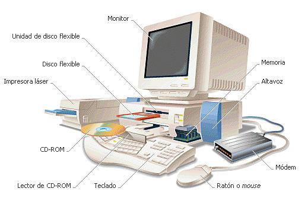
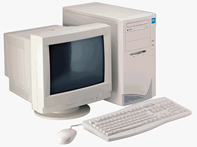

¿Qué es un computador?
Es un dispositivo electrónico el cual se encarga de procesar información de manera ordenada.
Una computadora u ordenador es un dispositivo electrónico compuesto básicamente de un procesador, una memoria y los dispositivos de entrada/salida, por otro lado se dice que es un sistema digital de procesar información a partir de un grupo de instrucciones denominadas programas
Importancia
Es que nos permite realizar diversas acciones que nos ayudarán dentro de nuestras vidas y en la sociedad ya que es considerada la herramienta más útil.
La computadora hoy día es de mucha importancia ya que a través de ella se han podido lograr muchos avances tecnológicos un ejemplo de ello lo es la facilidad para comprar boletos de viajes y estadías. Además es un buen modo de comunicación ya que a través de ella podemos comunicarnos a diferentes partes del mundo de una manera fácil y corta. También la computadora provee una serie de programas de aplicación en la cual ayuda a nosotros como estudiantes a realizar un mejor trabajo como lo es el procesador de palabras (Word), hojas electrónicas (Excel), base de datos (Access), y presentaciones ( Power point )
Ventajas del computador como herramienta tecnológica.
Ø La cantidad de tiempo que puede realizar tareas sin sentir cansancio.
Ø Almacena gran cantidad de información la que puede ser utilizada cuando sea necesaria, modificarla y si fuera el caso borrarla.
Ø Reproducir e imprimirla la cantidad de veces que sea necesario un texto, o cualquier material que se necesite.
Ø Enviar o recibir información desde cualquier lugar del mundo a través del medio tan importante, eficaz y económico como es Internet
Ø Desventajas del computador como herramientas tecnológica.
Ø La tecnología cambia rápidamente.
Ø El costo de su mantenimiento cada vez es más elevado.
TIPOS DE COMPUTADORA
Supercomputadoras
Una supercomputadora es una maquina diseñada para realizar billones de operaciones por segundo, ejecutando cálculos exactos con una gran velocidad.
Microcomputadoras
Su tamaño es inferior a las supercomputadoras, y su velocidad de procesamiento es un poco menor: tan solo varios millones de operaciones por segundo. Minicomputadoras
Son computadoras de un rango intermedio, que se emplean principalmente como servidores, ya que soportan varias terminales. Se utilizan en bibliotecas, bancos, colegios, universidades y otras instituciones de igual nivel.
Computadoras personales
La computadora de escritorio, o computadora personal, se utiliza principalmente en oficinas y en el hogar.
¿Que es un Computador Mainframe?
Es un ordenador o computadora de alta capacidad diseñada para las tareas computacionales más intensas. Las computadoras de tipo mainframe suelen tener varios usuarios, conectados al sistema a través de terminales. Los mainframes más potentes, llamados supercomputadoras, realizan cálculos muy complejos y que requieren mucho tiempo.
Este tipo de equipos informáticos lo utilizan principalmente los científicos dedicados a la investigación pura y aplicada, las grandes compañías y el ejército.

¿Que es un Microcomputador?
Es un dispositivo de computación de sobremesa o portátil, que utiliza un microprocesador como su unidad central de procesamiento o CPU. Los microordenadores más comunes son las computadoras u ordenadores personales, PC, computadoras domésticas, computadoras para la pequeña empresa o micros. Las más pequeñas y compactas se denominan laptops o portátiles e incluso palm tops por caber en la palma de la mano. Cuando los microordenadores aparecieron por primera vez, se consideraban equipos para un solo usuario, y sólo eran capaces de procesar cuatro, ocho o 16 bits de información a la vez. Con el paso del tiempo, la distinción entre microcomputadoras y grandes computadoras corporativas o mainframe (así como los sistemas corporativos de menor tamaño denominados minicomputadoras) ha perdido vigencia, ya que los nuevos modelos de microordenadores han aumentado la velocidad y capacidad de procesamiento de datos de sus CPUs a niveles de 32 bits y múltiples usuarios.
Elementos de un Computador.
Los elementos del computador son:
Hardware, equipo utilizado para el funcionamiento de una computadora. El hardware se refiere a los componentes materiales de un sistema informático. La función de estos componentes suele dividirse en tres categorías principales: entrada, salida y almacenamiento. Los componentes de esas categorías están conectados a través de un conjunto de cables o circuitos llamado bus con la unidad central de proceso (CPU) del ordenador, el microprocesador que controla la computadora y le proporciona capacidad de cálculo.
El soporte lógico o software, en cambio, es el conjunto de instrucciones que un ordenador emplea para manipular datos: por ejemplo, un procesador de textos o un videojuego. Estos programas suelen almacenarse y transferirse a la CPU a través del hardware de la computadora.
El software también rige la forma en que se utiliza el hardware, como por ejemplo la forma de recuperar información de un dispositivo de almacenamiento. La interacción entre el hardware de entrada y de salida es controlada por un software llamado BIOS (siglas en inglés de 'sistema básico de entrada / salida').
Aunque, técnicamente, los microprocesadores todavía se consideran hardware, partes de su función también están asociadas con el software. Como los microprocesadores tienen tanto aspectos de hardware como de software, a veces se les aplica el término intermedio de microprogramación, o firmware.
Lenguajes en Computación.
En informática, cualquier lenguaje artificial puede utilizarse para definir una secuencia de instrucciones para su procesamiento por un ordenador o computadora. Es complicado definir qué es y qué no es un lenguaje. Se asume generalmente que la traducción de las instrucciones a un código que comprende la computadora debe ser completamente sistemática. Normalmente es la computadora la que realiza la traducción.
Tipos De Lenguajes:
Lenguaje Máquina
El lenguaje propio del ordenador, basado en el sistema binario, o código máquina, resulta difícil de utilizar para las personas. El programador debe introducir todos y cada uno de los comandos y datos en forma binaria, y una operación sencilla como comparar el contenido de un registro con los datos situados en una ubicación del chip de memoria puede tener el siguiente formato: 11001010 00010111 11110101 00101011. La programación en lenguaje máquina es una tarea tan tediosa y consume tanto tiempo que muy raras veces lo que se ahorra en la ejecución del programa justifica los días o semanas que se han necesitado para escribir el mismo.
Lenguaje bajo nivel
Vistos a muy bajo nivel, los microprocesadores procesan exclusivamente señales electrónicas binarias. Dar una instrucción a un microprocesador supone en realidad enviar series de unos y ceros espaciadas en el tiempo de una forma determinada. Esta secuencia de señales se denomina código máquina. El código representa normalmente datos y números e instrucciones para manipularlos. Un modo más fácil de comprender el código máquina es dando a cada instrucción un mnemónico, como por ejemplo STORE, ADD o JUMP. Esta abstracción da como resultado el ensamblador, un lenguaje de muy bajo nivel que es específico de cada microprocesador.
Los lenguajes de bajo nivel permiten crear programas muy rápidos, pero que son a menudo difíciles de aprender. Más importante es el hecho de que los programas escritos en un bajo nivel sean altamente específicos de cada procesador. Si se lleva el programa a otra máquina se debe reescribir el programa desde el principio
Lenguaje alto nivel
Los lenguajes de alto nivel sueles utilizar términos ingleses del tipo LIST, PRINT u OPEN como comandos que representan una secuencia de decenas o de centenas de instrucciones en lenguaje máquina. Los comandos se introducen desde el teclado, desde un programa residente en la memoria o desde un dispositivo de almacenamiento, y son interceptados por un programa que los traduce a instrucciones en lenguaje máquina.
Los programas traductores son de dos tipos: intérpretes y compiladores. Con un intérprete, los programas que repiten un ciclo para volver a ejecutar parte de sus instrucciones, reinterpretan la misma instrucción cada vez que aparece. Por consiguiente, los programas interpretados se ejecutan con mucha mayor lentitud que los programas en lenguaje máquina. Por el contrario, los compiladores traducen un programa integro a lenguaje máquina antes de su ejecución, por lo cual se ejecutan con tanta rapidez como si hubiese sido escrita directamente en lenguaje máquina.
Dispositivos De Entrada:
En esta se encuentran:
Teclado
Mouse o Ratón
Escáner o digitalizador de imágenes
Definición de cada uno:
El Teclado: Es un
dispositivo periférico de entrada, que convierte la acción mecánica de pulsar una serie de pulsos eléctricos codificados que permiten
identificarla. Las teclas que lo constituyen sirven para entrar caracteres
alfanuméricos y comandos a una computadora.
En un teclado se puede distinguir a cuatro subconjuntos de teclas:
Teclado alfanumérico: con las teclas dispuestas como en una máquina de escribir.
Teclado numérico: (ubicado a la derecha del anterior) con teclas dispuestas como en una calculadora.
Teclado de funciones: (desde F1 hasta F12) son teclas cuya función depende del programa en ejecución.
Teclado de cursor: para ir con el cursor de un lugar a otro en un texto. El cursor se mueve según el sentido de las flechas de las teclas, ir al comienzo de un párrafo (" HOME "), avanzar / retroceder una página ("PAGE UP/PAGE DOWN "), eliminar caracteres ("delete"), etc.
Cada tecla tiene su contacto, que se encuentra debajo de, ella al oprimirla se " Cierra " y al soltarla se " Abre ", de esta manera constituye una llave " si – no ".
El Mouse O Ratón: es un dispositivo señalador o de entrada, recibe esta denominación por su apariencia.
Para poder indicar la trayectoria que recorrió, a medida que se desplaza, el Mouse debe enviar al computador señales eléctricas binarias que permitan reconstruir su trayectoria, con el fin que la misma sea repetida por una flecha en el monitor. Para ello el Mouse debe realizar dos funciones:
Conversión Analógica -Digital: Esta generar por cada fracción de milímetro que se mueve, uno o más pulsos eléctricos.
Port serie: Dichos pulsos y enviar hacia la interfaz a la cual esta conectado el valor de la cuenta, junto con la información acerca de sí se pulsa alguna de sus dos o tres teclas ubicada en su parte superior.
Existen dos tecnologías principales en fabricación de ratones: Ratones mecánicos y Ratones ópticos.
Ratones mecánicos: Estos constan de una bola situada en su parte inferior. La bola, al moverse el ratón, roza unos contactos en forma de rueda que indican el movimiento del cursor en la pantalla del sistema informático.
Ratones ópticos: Estos tienen un pequeño haz de luz láser en lugar de la bola rodante de los mecánicos. Un censor óptico situado dentro del cuerpo del ratón detecta el movimiento del reflejo al mover el ratón sobre el espejo e indica la posición del cursor en la pantalla de la computadora.
El Escáner O Digitalizador De Imágenes: Son periféricos diseñados para registrar caracteres escritos, o gráficos en forma de fotografías o dibujos, impresos en una hoja de papel facilitando su introducción la computadora convirtiéndolos en información binaria comprensible para ésta.
El funcionamiento de un escáner es similar al de una fotocopiadora. Se coloca una hoja de papel que contiene una imagen sobre una superficie de cristal transparente, bajo el cristal existe una lente especial que realiza un barrido de la imagen existente en el papel; al realizar el barrido, la información existente en la hoja de papel es convertida en una sucesión de información en forma de unos y ceros que se introducen en la computadora.
Dispositivos De Almacenamiento
En esta se encuentran:
Disco Duro
Diskettes 3 ½
Maletón-ópticos de 5,25
Definición de cada uno:
Disco Duro: Este está compuestos por varios platos, es decir, varios discos de material magnético montados sobre un eje central sobre el que se mueven. Para leer y escribir datos en estos platos se usan las cabezas de lectura / escritura que mediante un proceso electromagnético codifican / decodifican la información que han de leer o escribir. La cabeza de lectura / escritura en un disco duro está muy cerca de la superficie, de forma que casi da vuelta sobre ella, sobre el colchón de aire formado por su propio movimiento. Debido a esto, están cerrados herméticamente, porque cualquier partícula de polvo puede dañarlos.
Este dividen en unos círculos concéntricos cilíndricos (coincidentes con las pistas de los disquetes), que empiezan en la parte exterior del disco (primer cilindro) y terminan en la parte interior (ultimo). Asimismo, estos cilindros se dividen en sectores, cuyo numero esta determinado por el tipo de disco y su formato, siendo todos ellos de un tamaño fijo en cualquier disco. Cilindros como sectores se identifican con una serie de números que se les asigna, empezando por el 1, pues el numero 0 de cada cilindro se reservan para propósitos de identificación más que para almacenamientos de datos. Estos escritos / leídos en el disco deben ajustarse al tamaño fijado del almacenamiento de los sectores. Habitualmente, los sistemas de discos duros contienen más de una unidad en su interior, por lo que el numero de caras puede ser mas de dos. Estas se identifican con un número, siendo el 0 para la primera. En general su organización es igual a los disquetes. La capacidad del disco resulta de multiplicar el número de caras por el de pistas por cara y por el de sectores por pista, al total por el número de bytes por sector.
Diskettes 3 ½: Son disco de almacenamiento de alta densidad de 1,44 MB, este presenta dos agujeros en la parte inferior del mismo, uno para proteger al disco contra escritura y el otro solo para diferenciarlo del disco de doble densidad.
Maletón-Ópticos De 5,25: Este se basa en la misma tecnología que sus hermanos pequeños de 3,5", su ventajas: Gran fiabilidad y durabilidad de los datos a la vez que una velocidad razonablemente elevada Los discos van desde los 650 MB hasta los 5,2 GB de almacenamiento, o lo que es lo mismo: desde la capacidad de un solo CD-ROM hasta la de 8.
Dispositivos De Salida
En esta se encuentran:
Impresoras
Monitor
Las Impresoras: Esta es la que permite obtener en un soporte de papel una ¨ hardcopy¨: copia visualizable, perdurable y transportable de la información procesada por un computador.
Las primeras impresoras nacieron muchos años antes que el PC e incluso antes que los monitores, siendo durante años el método más usual para presentar los resultados de los cálculos en aquellos primitivos ordenadores, todo un avance respecto a las tarjetas y cintas perforadas que se usaban hasta entonces.
Tipo De Impresoras
Ø Impacto por matriz de aguja o punto
Ø Chorro o inyección de tinta
Ø Láser
El Monitor: Evidentemente, es la pantalla en la que se ve la información suministrada por el ordenador. En el caso más habitual se trata de un aparato basado en un tubo de rayos catódicos (CRT) como el de los televisores, mientras que en los portátiles es una pantalla plana de cristal líquido (LCD).
La resolución se define como el número de puntos que puede representar el monitor por pantalla, en horizontal x vertical. Así, un monitor cuya resolución máxima sea de 1024x768 puntos puede representar hasta 768 líneas horizontales de 1024 puntos cada una, probablemente además de otras resoluciones inferiores, como 640x480 u 800x600. Cuan mayor sea la resolución de un monitor, mejor será la calidad de la imagen en pantalla, y mayor será la calidad (y por consiguiente el precio) del monitor.
Red De Comunicaciones: Un sistema computacional es un sistema complejo que puede llegar a estar constituido por millones de componentes electrónicos elementales. Esta naturaleza multinivel de los sistemas complejos es esencial para comprender tanto su descripción como su diseño. En cada nivel se analiza su estructura y su función en el sentido siguiente:
Estructura: La forma en que se interrelacionan
las componentes
Función: La operación de cada componente individual como parte de la
estructura.
Por su particular importancia se considera la estructura de interconexión tipo bus. EI bus representa básicamente una serie de cables mediante los cuales pueden cargarse datos en la memoria y desde allí transportarse a la CPU. Por así decirlo es la autopista de los datos dentro del PC ya que comunica todos los componentes del ordenador con el microprocesador. El bus se controla y maneja desde la CPU.
¿Que es UCP o CPU?
Unidad central de proceso o UCP (conocida por sus siglas en inglés, CPU), circuito microscópico que interpreta y ejecuta instrucciones. La CPU se ocupa del control y el proceso de datos en las computadoras. Generalmente, la CPU es un microprocesador fabricado en un chip, un único trozo de silicio que contiene millones de componentes electrónicos. El microprocesador de la CPU está formado por una unidad aritmético-lógica que realiza cálculos y comparaciones, y toma decisiones lógicas (determina si una afirmación es cierta o falsa mediante las reglas del álgebra de Boole); por una serie de registros donde se almacena información temporalmente, y por una unidad de control que interpreta y ejecuta las instrucciones. Para aceptar órdenes del usuario, acceder a los datos y presentar los resultados, la CPU se comunica a través de un conjunto de circuitos o conexiones llamado bus. El bus conecta la CPU a los dispositivos de almacenamiento (por ejemplo, un disco duro), los dispositivos de entrada (por ejemplo, un teclado o un mouse) y los dispositivos de salida (por ejemplo, un monitor o una impresora).
Funcionamiento de la CPU
Cuando se ejecuta un programa, el registro de la CPU, llamado contador de programa, lleva la cuenta de la siguiente instrucción, para garantizar que las instrucciones se ejecuten en la secuencia adecuada. La unidad de control de la CPU coordina y temporiza las funciones de la CPU, tras lo cual recupera la siguiente instrucción desde la memoria. En una secuencia típica, la CPU localiza la instrucción en el dispositivo de almacenamiento correspondiente.
Memorias.
Memoria RAM.
Memoria de acceso aleatorio o RAM, en informática, memoria basada en semiconductores que puede ser leída y escrita por el microprocesador u otros dispositivos de hardware. Es un acrónimo del inglés Random Access Memory. El acceso a las posiciones de almacenamiento se puede realizar en cualquier orden. Actualmente la memoria RAM para computadoras personales se suele fabricar en módulos insertables llamados SIMM.
Memoria ROM
Memoria de sólo lectura o ROM, en informática, memoria basada en semiconductores que contiene instrucciones o datos que se pueden leer pero no modificar. En las computadoras IBM PC y compatibles, las memorias ROM suelen contener el software necesario para el funcionamiento del sistema. Para crear un chip ROM, el diseñador facilita a un fabricante de semiconductores la información o las instrucciones que se van a almacenar. El fabricante produce entonces uno o más chips que contienen esas instrucciones o datos. Como crear chips ROM implica un proceso de fabricación, esta creación es viable económicamente sólo si se producen grandes cantidades de chips. Los diseños experimentales o los pequeños volúmenes son más asequibles usando PROM o EPROM. El término ROM se suele referir a cualquier dispositivo de sólo lectura, incluyendo PROM y EPROM.
Software Windows.
Windows, en informática, nombre común o coloquial de Microsoft Windows, un entorno multitarea dotado de una interfaz gráfica de usuario, que se ejecuta en computadoras diseñadas para MS-DOS. Windows proporciona una interfaz estándar basada en menús desplegables, ventanas en pantalla y un dispositivo señalador como el mouse (ratón). Los programas deben estar especialmente diseñados para aprovechar estas características
Ventana (informática), en aplicaciones informáticas e interfaces gráficas de usuario, una parte de la pantalla que puede contener su propio documento o mensaje. En programas basados en ventanas, la pantalla puede dividirse en varias ventanas, cada una de las cuales tiene sus propios límites y puede contener un documento diferente (o una presentación distinta del mismo documento). Cada ventana puede contener su propio menú u otros controles, y el usuario puede ampliarla o reducirla mediante un dispositivo señalador (puntero), que se acciona con el ratón o mouse.
Un entorno basado en ventanas es un sistema que presenta al usuario distintas ventanas, como por ejemplo el Finder de los equipos Apple Macintosh, Microsoft Windows y el OS/2 Presentation Manager.